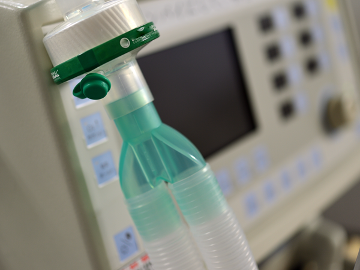

私たちのたなごころで
温もりと優しさをお届けします
内閣府認証 特定非営利活動法人 さかえ会
たなごころ
訪問看護ステーション
私たちのたなごころで
温もりと優しさをお届けします
私たちは地域の皆様に信頼される訪問看護ステーションを目指しています。
病気や障害があっても住み馴れた自宅で自分らしく、希望に沿った生活ができるように、
看護とリハビリを通してお手伝いします。
看護師がご自宅を訪問し、住み慣れた家・地域でその人らしく療養生活を送れるように、看護ケアを提供し、自立への援助を促し、療養生活を支援するサービスです。 24時間・365日安心の対応です。

医療機器の管理/
在宅酸素、人工呼吸器などの管理
病状の観察/病気や障害の状態、
血圧、体温、脈拍などのチェック
ターミナルケア/
癌末期や終末期の在宅療養
お薬の管理
利用者様、介護者様の心のケア
など。詳しくはお問い合わせください。
介護保険の認定を受ける必要があるため、かかりつけ医に訪問看護の利用についてご相談ください。
お近くの包括支援センター、わからない場合は、たなごころ訪問看護ステーション045-790-5668にご相談ください。
かかりつけ医が必要と判断した場合、訪問看護ステーションにお申し込みください。
かかりつけ医が訪問看護ステーションに訪問看護指示書を出します。
相談者様のお悩み、対象者様の状況をお聞かせください。詳しくはお問い合せください。
当事業所の訪問看護師、訪問リハビリスタッフがご自宅を訪問させていただき、さらに詳しく状況をお伺いします。
訪問看護師、訪問リハビリスタッフが定期的にお客様のご自宅に訪問いたします。
地域の皆様に信頼される訪問看護ステーションを目指します。病気や障害があっても住み馴れた自宅で自分らしく、希望に沿った生活ができるように、看護とリハビリを通してお手伝いします。
たなごころ訪問看護ステーション
林 京子
Recruitment
地域の暮らしに寄り添う仕事を、
私たちと一緒にしませんか。
たなごころ訪問看護ステーション
横浜市金沢区能見台通34-4 いづみビル1F
京急能見台駅より徒歩7分